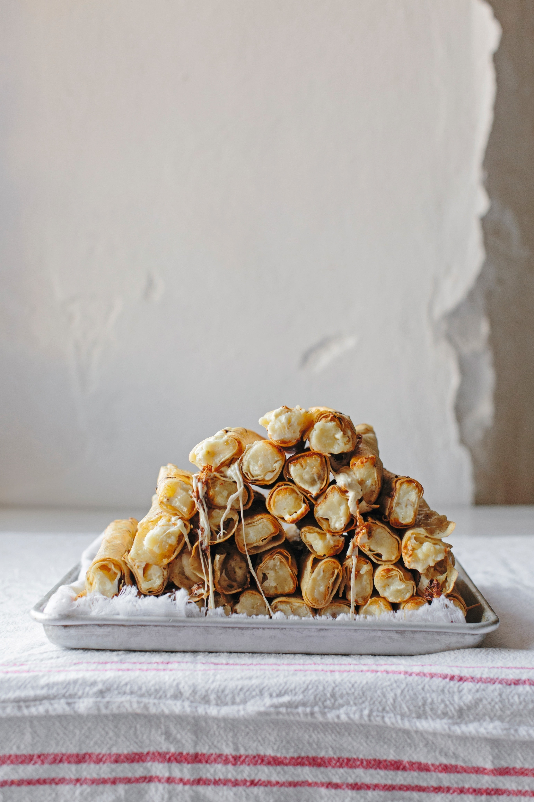

The Cheesiest Potato Taquitos of your life!

Description
Crispy, cheesy taquitos. Does anything sound better? These taquitos are fantastic and you won't regret giving them a chance. You'll be eating in less than 30 minutes, which is great for a week day dinner.
Ingredients*
- 10 Tortillas
- 1 Russet Potato
- 6-8 oz Oaxacan or Monterrey Jack Cheese
- 1/2 cup Crema
- Salt to taste
- Neutral oil for frying
- Garnish to your liking
Steps
- Poke some holes in your potato with a fork and throw it in the microwave for 8 minutes, flipping half way through.
- Heat up some oil to 325F.
- Once potato is done cooking, throw it in a bowl and mash together with the cheese, crema, and salt.
- Heat up the tortillas in a microwave for 30 seconds to loosen them up.
- Add 2 Tbs of potato mixture to each tortillas and roll tortillas into a taquito.
- Fry in batches until taquitos are gold and crispy.
- Garnish to your liking! I enjoy these with crema, queso fresco, lettuce, and a spicy salsa.
*Wrote this on the spot so proportions may be a bit off. Be a cook about it and play with your food!